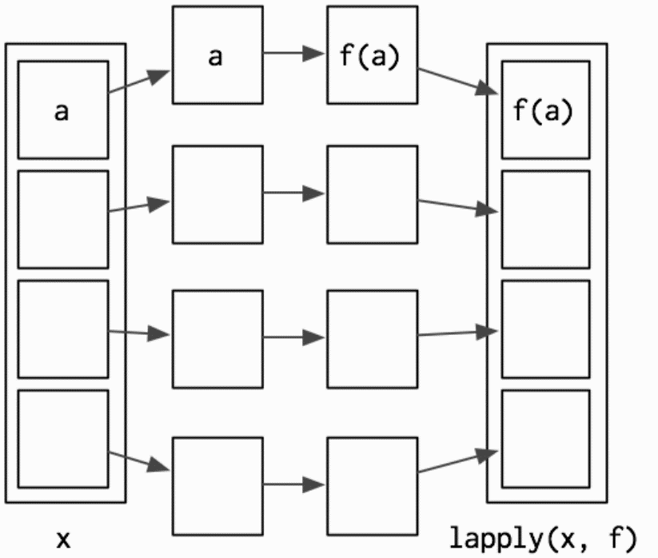

R Functions
Functions
R has a large collection of built-in functions that are called like this:
function_name(arg1 = val1, arg2 = val2, ...)
Let’s try using sum(), which makes regular summary of numbers. Type su and hit Tab. A pop-up shows you possible completions. Specify sum() by typing more (a “m”) to disambiguate, or by using ↑/↓ arrows to select.
sum(1,2)
## [1] 3
How to create function
The default syntax for creating a function as follow:
variable <- function(arg1, arg2,...){
your expression/algorithm
}
Hello, World!
Now is the very cliché stuff...
If we did not include a "Hello, World!" this would not be a serious and sleepy programming class.
hello <- function(){
print("Hello, World!")
}
hello()
## [1] "Hello, World!"
Name masking
You should have no problem predicting the output.
f <- function() {
x <- 1
y <- 2
c(x, y)
}
f()
## [1] 1 2
If a name isn’t defined inside a function, R will look one level up.
x <- 2
g <- function() {
y <- 1
c(x, y)
}
g()
## [1] 2 1
Function inside another function
x <- 1
h <- function() {
y <- 2
i <- function() {
z <- 3
c(x, y, z)
}
i()
}
h()
## [1] 1 2 3
Functios created by other function
j <- function(x) {
y <- 2
function() {
c(x, y)
}
}
k <- j(1)
k()
## [1] 1 2
Functions vs Variables
The same principles apply regardless of the type of associated value — finding functions works exactly the same way as finding variables:
l <- function(x)
x + 1
m <- function() {
l <- function(x)
x * 2
l(10)
}
m()
## [1] 20
If you are using a name in a context where it’s obvious that you want a function (e.g.,f(3)), R will ignore objects that are not functions while it is searching.
n <- function(x)
x / 2
o <- function() {
n <- 10
n(n)
}
o()
## [1] 5
Exercise
What does the following function return? Make a prediction before running the code yourself.
f <- function(x) { f <- function(x) { f <- function(x) { x ^ 2 } f(x) + 1 } f(x) * 2 } f(10)
Answer:
## [1] 202
Every operation is a function call
“To understand computations in R, two slogans are helpful:
- Everything that exists is an object.
- Everything that happens is a function call.”
- John Chambers
Say a + operation between variable x and y, we can do this:
x <- 1
y <- 2
x+y
## [1] 3
Then if we set the + operator into a regular funciton format:
`+`(x,y)
## [1] 3
Another example of for
for (i in 1:2) print(i)
## [1] 1
## [1] 2
Then again for as a regular funciton:
`for`(i, 1:2, print(i))
## [1] 1
## [1] 2
Anonymous functions
Anonymouse functions shows you a side of functions that you might not have known about: you can use functions without giving them a name.
In R, functions are objects. They aren’t automatically bound to a name. Unlike other languages (e.g., Python), R doesn’t have a special syntax for creating a named function.
Generally, you use the regular assignment operator to give it a name when you create a function in R. If you choose not to give the function a name, you get an anonymous function.
The following code chunk does not call the function, but it only return the function itself.
function(x)3()
function(x)3()
You can call an anonymous function without giving it a name. You have to use the parenthesis in two ways: first, to call a function, and second to make it clear that you want to call the anonymous function itself, as opposed to calling a (possibly invalid) function inside the anonymous function:
With appropriate parenthesis, the function is called:
(function(x) 3)()
## [1] 3
Return Values
Functions are generally used for computing some value, so they need a mechanism to supply that value back to the caller.
# first build it without an explicit return
double.num <- function(x) {
x * 2
}
double.num(5)
## [1] 10
# now build it with an explicit return
double.num <- function(x) {
return(x * 2)
}
double.num(5)
## [1] 10
double.num <- function(x) {
x * 3
print("hello")
x * 2
}
double.num(5)
## [1] "hello"
## [1] 10
double.num <- function(x) {
return(x * 2)
print("hello")
return(3)
}
double.num(5)
## [1] 10
Control Statments
Control statements allow us to control the flow of our programming and cause different
things to happen, depending on the values of tests. The main control statements are
if , else, ifelse and switch.
Create one function with if and else
Let's try to create a function to demonstrate if the variable is equal to 1
if.one <- function(x){
if(x==1){
print("True")
}else{
print("False")
}
}
if.one(1)
if.one(2)
## [1] "True"
## [1] "False"
Create one function with ifelse
Let's try to create a function to demonstrate if the variable is equal to 1
if.one <- function(x){
ifelse(x==1, "TRUE","FALSE")
}
if.one(1)
if.one(2)
## [1] "TRUE"
## [1] "FALSE"
Create one function with switch
If we have multiple cases to check, writing else if repeatedly can be cumbersome and inefficient. This is where switch is most useful.
multipleCases <- function(x){
switch(x,
a="first",
b="second",
z="last",
c="third",
d="other")
}
multipleCases("a")
Special argument ...
There is a special argument called ... . This argument will match any arguments not otherwise matched, and can be easily passed on to other functions.
Example 1
f <- function(a,b,c) {
data.frame(a,b,c)
}
f(a = 1, b = 2, c = 3)
## a b c
## 1 1 2 3
Example 2
f <- function(...) {
data.frame(...)
}
f(a = 1, b = 2, c = 3, d = 5, e = 7)
## a b c d e
## 1 1 2 3 5 7
Tips
Try press Alt-Shift-K to see the shortcuts in R Studio.
for Loops
The most commonly used loop is the for loop.
for(i in 1:3){
print(i)
}
## [1] 1
## [1] 2
## [1] 3
Let's build up a automatic for loop to count the number of letters for fruit names.
# build a vector holding fruit names
fruit <- c("apple", "banana", "pomegranate")
# make a variable to hold their lengths, with all NA to start
fruitLength <- rep(NA, length(fruit))
fruitLength
## [1] NA NA NA
# give it names
names(fruitLength) <- fruit
fruitLength
## apple banana pomegranate
## NA NA NA
for (i in fruit){
fruitLength[i] <- nchar(i)
}
fruitLength
## apple banana pomegranate
## 5 6 11
Apply Family
Built into R is the apply function and all of its common relatives such as lapply, sapply and mapply. Each has its quirks and necessities and is best used in different situations.
apply
theMatrix <- matrix(1:9, nrow=3)
# sum the rows
apply(theMatrix, 1, sum)
## [1] 12 15 18
# sum the columns
apply(theMatrix, 2, sum)
## [1] 6 15 24
Notice that this could alternatively be accomplished using the built-in rowSums and colSums functions, yielding the same results.
Sum up the row values.
rowSums(theMatrix)
## [1] 12 15 18
Sum up the column values.
colSums(theMatrix)
## [1] 6 15 24
lapply and sapply
Basic grammar:
lapply(x, FUN, ...)
sapply(x, FUN, ...)
lapply
lapply works by applying a function to each element of a list and returning the results as a list.

Hadley Wickham, Advanced R
lapply works by applying a function to each element of a list and returning the results as a list.
theList <- list(A=1:3, B=1:5, C=-1:1, D=2)
lapply(theList, sum)
## $A
## [1] 6
##
## $B
## [1] 15
##
## $C
## [1] 0
##
## $D
## [1] 2
sapply
sapply is a user-friendly version and wrapper of lapply by default returning a vector.
theList <- list(A=1:3, B=1:5, C=-1:1, D=2)
sapply(theList, sum)
## A B C D
## 6 15 0 2
mapply
Perhaps the most-overlooked-when-so-useful member of the apply family is mapply, which applies a function to each element of multiple lists.
firstList <-
list(A = matrix(1:16, 4),
B = matrix(1:16, 2),
C = data.frame(1:5))
secondList <-
list(A = matrix(1:16, 4),
B = matrix(1:16, 8),
C = data.frame(15:1))
# test element-by-element if they are identical
mapply(identical, firstList, secondList)
## A B C
## TRUE FALSE FALSE
Lets create one small function with mapply:
simpleFunc <- function(x, y) {
nrow(x) + nrow(y)
}
mapply(simpleFunc, firstList, secondList)
## A B C
## 8 10 20
References:
[1] Hadley Wickham, Advanced R
[2] Hadley Wickham, Garrett Grolemund. R For Data Science.
[3] Yihui Xie, J. J. Allaire, Garrett Grolemund. R Markdown.
[4] Writing R functions, Jared P. Lander (NEU library)